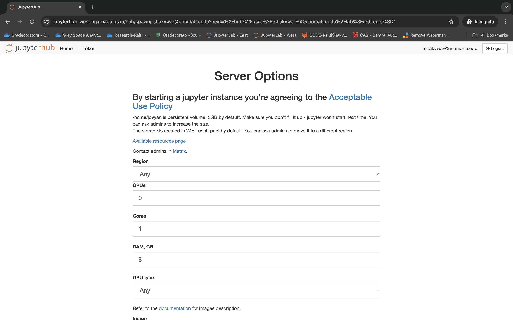
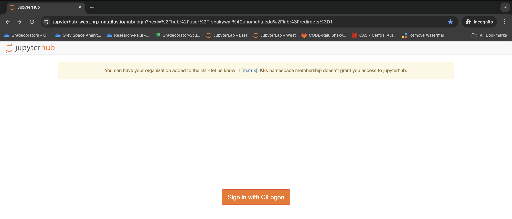
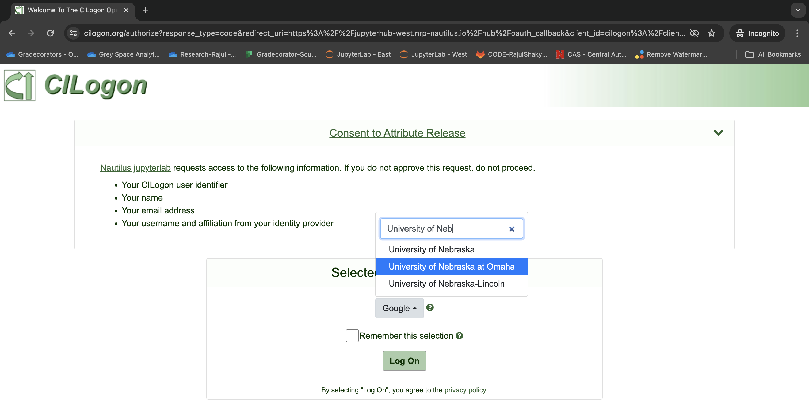
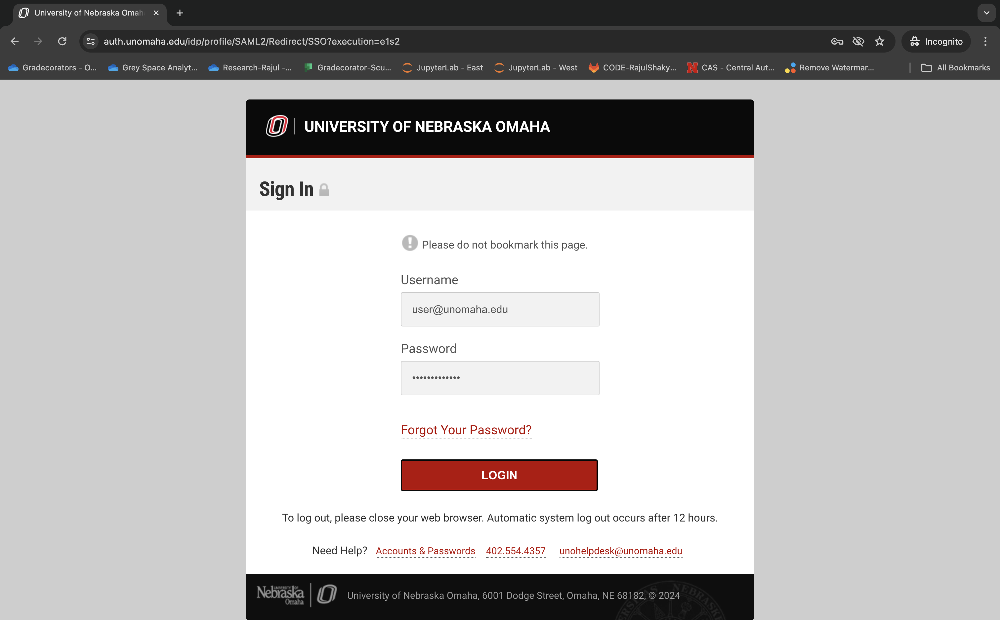
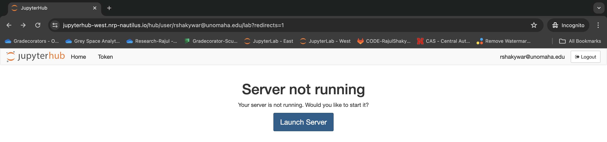
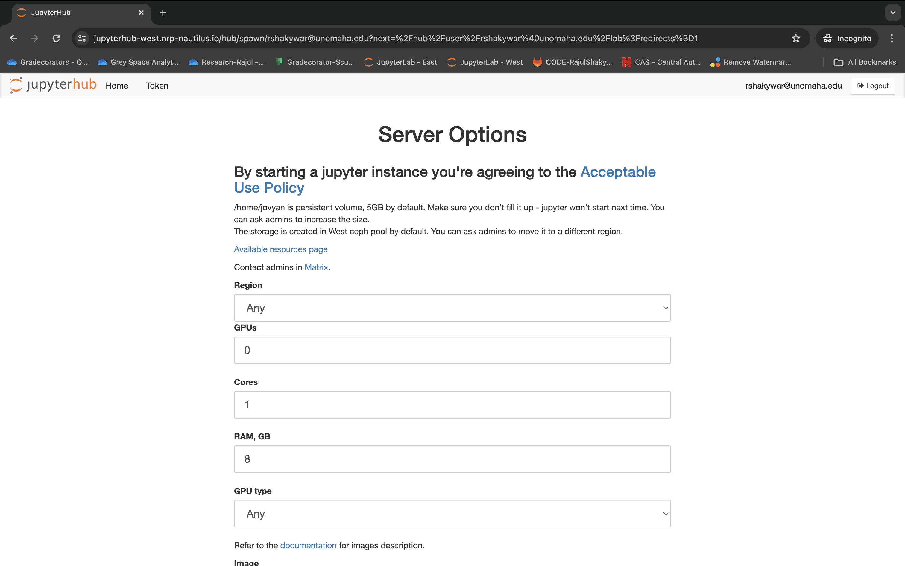
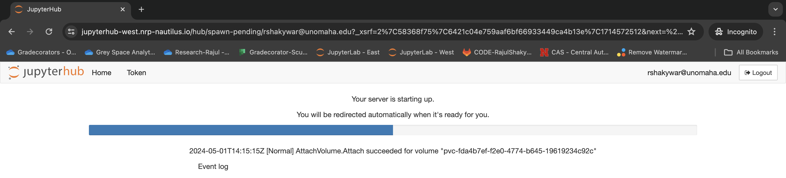
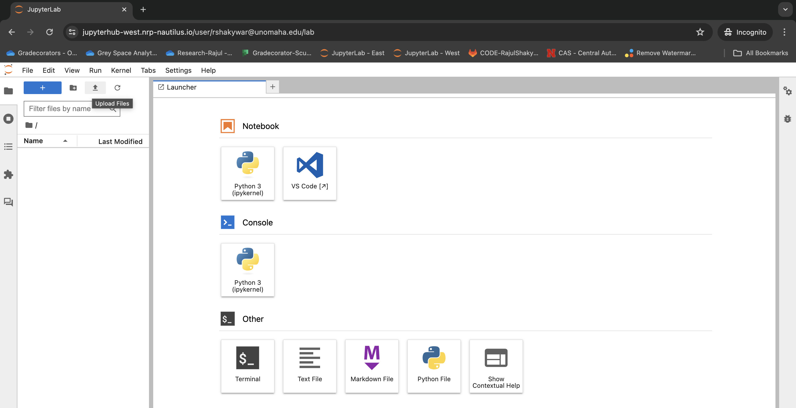

Step 3B Fill any specific required server details or leave it as default and click on Start.
 
Go to Link - https://jupyterhub-west.nrp-nautilus.io and click on CILogon

Log On
LOGIN with your university credentials.
Launch Server. Simply click on it.
Start.

